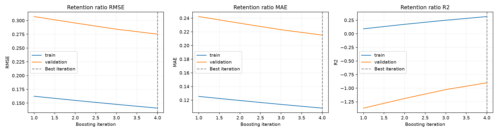
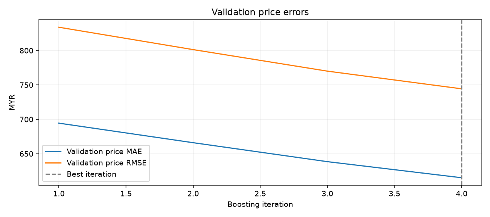

Independent NumPy/Pandas histogram boosting with second-order split gains, L1/L2 leaf penalties, gamma, asymmetric trees and learned missing-value directions. Categorical inputs use training-only one-hot encoding. This is a custom implementation of the core method, not the XGBoost package or its model format.
Training curves are resubstitution metrics, not unbiased generalization estimates. All preprocessing is fitted on training data only.
| mae | rmse | r2 | |
|---|---|---|---|
| retention_ratio | 0.1658 | 0.2076 | 0.2875 |
| price_myr | 594.5928 | 745.1573 | 0.2119 |
Early stopping: price_mae; best iteration: 4

Lower MAE/RMSE is better; higher R² is better. Ratio metrics and MYR price metrics use different units. Synthetic results do not establish real-market accuracy.
Every-iteration CSV · Full metrics · Feature split gains
